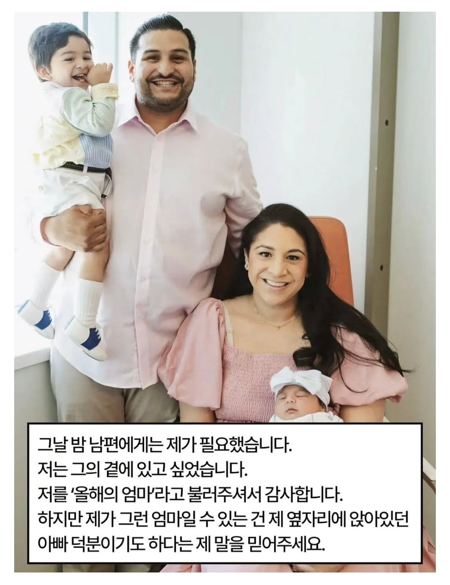

도움이 필요하시면 손을 접으세요
다는 댓글마다 재미없는 탬플릿을 쓰네
본인은 유쾌하다고 생각하는지??
부부관계라는게 남은 잘 모르는거더라고 애가 음식 안보채길래 아이가 얌전해서 나간김에 밥사왔네 싶었는데
고소가능하려나
여자가 차분하게 설명 잘 했네. 잘 모르는 일에는 함부로 입대는 게 아니지...
욕해도 될거같은 분위기만 생겼다하면 몰려가서 뜯는건 동서고금 남녀노소 ㅋㅋㅋ
짧은 순간의 영상, 표정 캡처 같은 걸로 손쉽게 욕받이 하나 만드는 거는 만국공통인듯
저 샌프 캐스터 내일 해설 은퇴하는데 마지막 시즌에 저런 야리돌림 던지고 가네
내일 초청해서 인터뷰하고 내년 시즌권 사주면 되것는데
물병 못여는 헬창 놀리기는 재밌던데
이건 조졌네
왜 남의 가정사에 함부로 떠드는거야
망토랑 몽둥이만 쥐면 본인이 정의의 사도라도 됐다고 생각하그든
조커생성기
남편이 협박해서 옹호글 올린 거네 ㄷㄷㄷㄷ